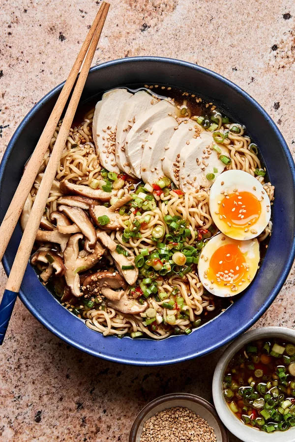
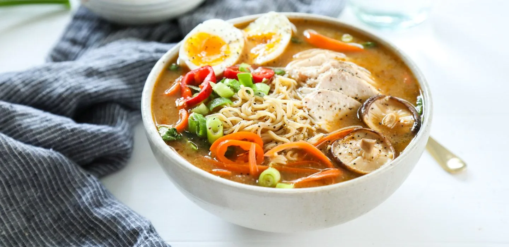
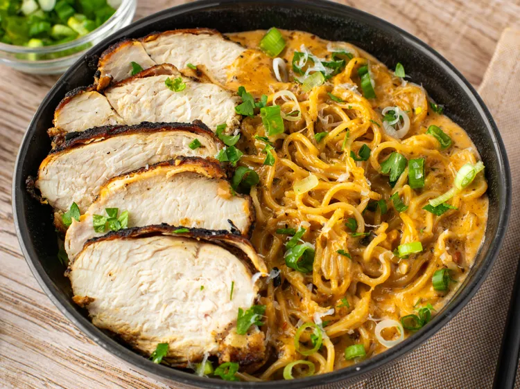

🥗 Non-Vegetarian | Snacks/Main Course
A warm, comforting bowl of rich broth, tender chicken, and flavorful noodles

Chicken Ramen is a classic Japanese noodle soup known for its rich umami broth, tender chicken, and perfectly cooked noodles. This dish combines warmth, nutrition, and flavor in one bowl, making it ideal for both comfort meals and quick dinners.


Store broth and noodles separately in airtight containers in the refrigerator for up to 2 days. Reheat broth on stovetop and add freshly cooked noodles before serving.
Calories: 420 kcal | Carbohydrates: 45g | Protein: 25g | Fat: 15g | Sodium: 900mg | Fiber: 3g
Disclaimer: Values are approximate and may vary based on ingredients used.Have a recipe request or feedback? Let me know!